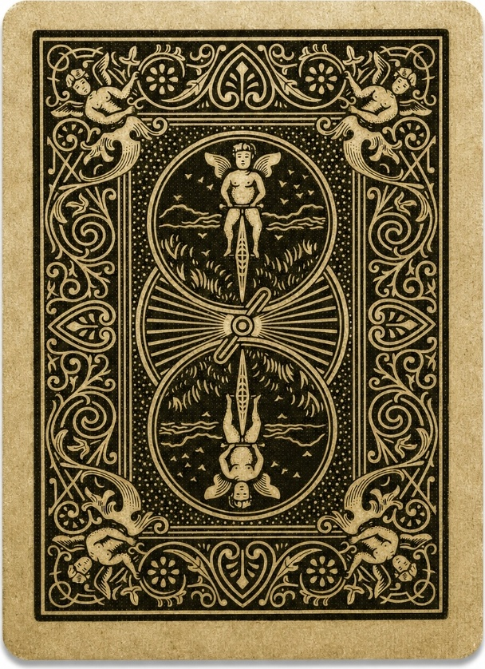
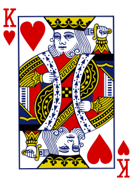
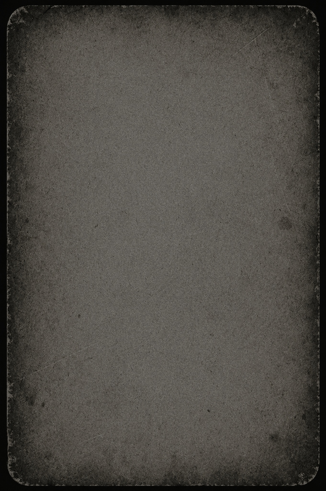
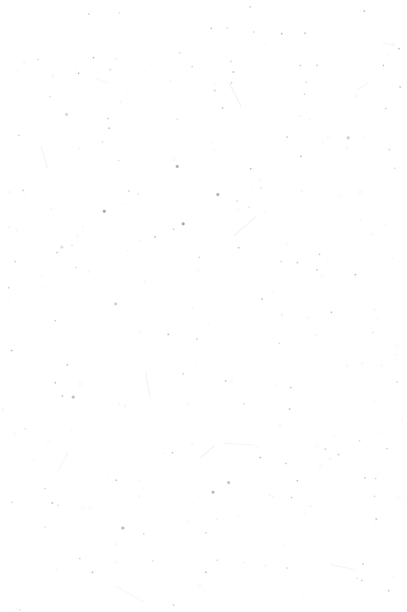

⚙️ Configuración del Marco
📡
API:
...
⏱️
Último poll:
Esperando...
🃏
Carta mostrada:
Ninguna (Dorso)
🔄
Estado:
Polling activo (4s)
🖼️ Fondo Fotográfico del Marco (PNG con ventana):
Fondo 1 - Oráculo Clásico
Fondo 2 - Noche Misterio
Fondo 3 - Marco Antiguo
Fondo 4 - Placa Iluminada
Fondo 5 - Escena Mágica
Fondo 6 - Arlequín Luna
URL de la API:
Brillo de Hardware (Tablet):
30%
Tono Sepia Analógico:
18%
Grano Analógico de Película:
18%
Desgaste de Toda la Fotografía:
75%
🧪 Probar Carta (Se mantendrá fija al guardar):
-- Seleccionar Carta para probar --
As de Corazones (A♥)
2 de Corazones (2♥)
3 de Corazones (3♥)
4 de Corazones (4♥)
5 de Corazones (5♥)
6 de Corazones (6♥)
7 de Corazones (7♥)
8 de Corazones (8♥)
9 de Corazones (9♥)
10 de Corazones (10♥)
Jota de Corazones (J♥)
Reina de Corazones (Q♥)
Rey de Corazones (K♥)
As de Diamantes (A♦)
2 de Diamantes (2♦)
3 de Diamantes (3♦)
4 de Diamantes (4♦)
5 de Diamantes (5♦)
6 de Diamantes (6♦)
7 de Diamantes (7♦)
8 de Diamantes (8♦)
9 de Diamantes (9♦)
10 de Diamantes (10♦)
Jota de Diamantes (J♦)
Reina de Diamantes (Q♦)
Rey de Diamantes (K♦)
As de Treboles (A♣)
2 de Treboles (2♣)
3 de Treboles (3♣)
4 de Treboles (4♣)
5 de Treboles (5♣)
6 de Treboles (6♣)
7 de Treboles (7♣)
8 de Treboles (8♣)
9 de Treboles (9♣)
10 de Treboles (10♣)
Jota de Treboles (J♣)
Reina de Treboles (Q♣)
Rey de Treboles (K♣)
As de Picas (A♠)
2 de Picas (2♠)
3 de Picas (3♠)
4 de Picas (4♠)
5 de Picas (5♠)
6 de Picas (6♠)
7 de Picas (7♠)
8 de Picas (8♠)
9 de Picas (9♠)
10 de Picas (10♠)
Jota de Picas (J♠)
Reina de Picas (Q♠)
Rey de Picas (K♠)
💾 Guardar Parámetros y Mantener Visualización
🔄 Reiniciar al Dorso y Reanudar Polling
⚡ Forzar Consulta a la API Ahora